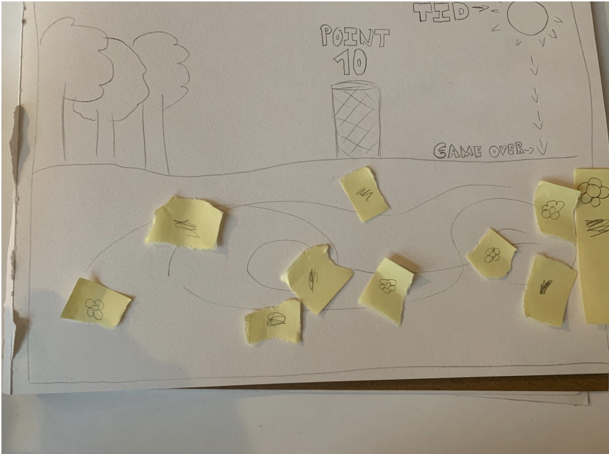
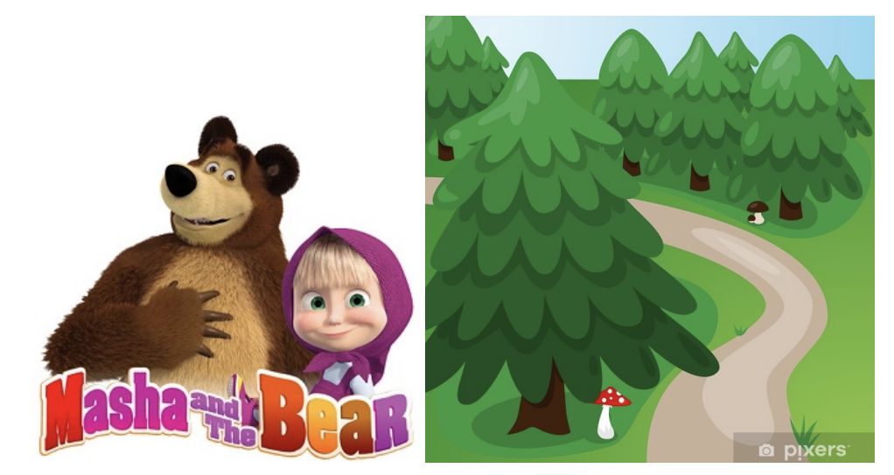
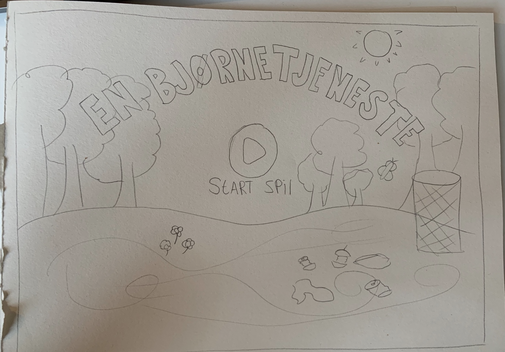
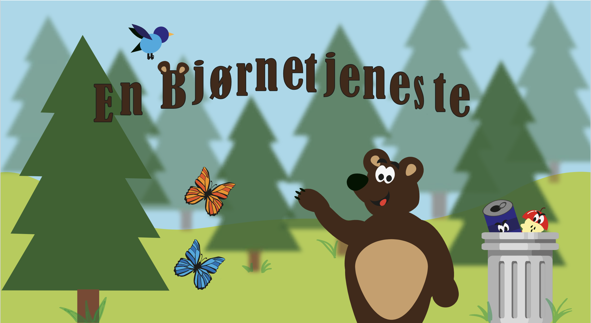
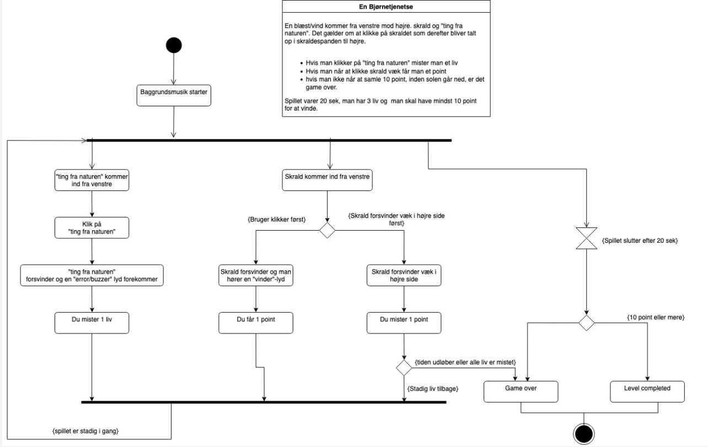
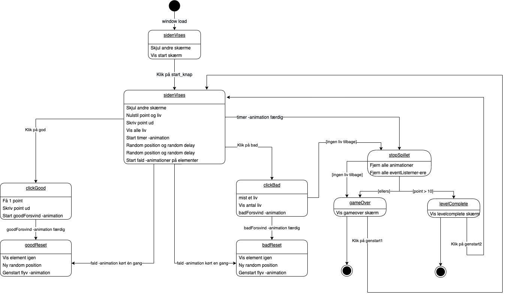

1. fase
IDE & KONCEPT
I tema 4 var første fase, at jeg ikke tænkte på det visuelle udtryk,
men mere på selve ideen med spillet/konceptet. Dette gjorde
jeg ved hjælp af research for stilarter og papir-prototype.
Efter min papir-prototype begyndte jeg at skitsere på mit eget
design, først på ipad og dernæst på papir. Mit
spilkoncept blev at man skulle hjælpe en bjørn i skoven med
at fjerne skrald, men man skulle passe på man ikke klikkede på ting
der rent faktisk hørte til i skoven.
Efter en masse stil-inspiration valgte jeg stilarten
flatdesign, som er et minimalistisk design med
todimensionelle elementer. Jeg valgte at give mine
UI-elementer noget highlight for at det skulle springe i
øjnene på forbrugeren.
- Adobe Illustrator -
Se opgaver
Spilkoncept
Stilinspiration
Skitse
2. fase
DESIGN & IDE
Med dette på plads begyndte udviklingen af
figurer, elementer og selve designet. Jeg blev her klogere
atmosfærisk perspektiv til at skabe dybe og kompositoriske
principper som brug af linjer, kontraster, focal point og rule of
thirds. Jeg lærte de forskellige storytellingsprincipper, herunder
principper om karakterdesign (brug af former og linjer til at
understrege en karakters eller figur-elements personlighed) Med
denne viden fik jeg designet min baggrundsskærm, titelskærm, mine
figurer osv.
Jeg benyttede mange forskellige og skarpe farver. I min
baggrund er det kolde farver som grøn og blå. Hvorimod i min
forgrund er det mere varme farver som brun, rød, orange, gul osv.
Men lyse farver i baggrunden og mørke stærke farver i forgrunden.
Med dette har jeg skabt baggrundssdybde. I min baggrund er træerne
skabt ud af trekanter og firkanter, hvilket også kan beskrives ved
at det er kikki, også beskrevet som spidse former. I min
forgrund er alle elementer skabt af bouba, det vil sige bløde
former. På den måde bliver der skabt en form for harmoni og det
giver en god effekt for spillet.
Alt dette tegnede jeg i Adobe Illustrator, her var der særligt
fokus på at tegne simple former med få punkter, hvor jeg
efterfølgende eksporterede det i SVG-format.
Jeg udarbejdede derefter et aktivitestdiagram og
derefter et state machine diagram.
- Adobe XD - HTML -
Se opgaver
{kind=link}
Rentegning
Aktivitetsdiagram
State machine diagram
3. fase
IMPLEMENTERING
Den sidste fase var implementering. Her blev vi introduseret
til javascript, som er et kodesprog der bruges til
interaktive brugergrænseflader.
I denne opgave anvendte vi javascript sammen med
CSS-animationer. Et spil der går ud på at klikke på gode og
dårlige elementer. Hvor man herefter kan miste et liv, få point
eller tabe ved at tiden løber ud. Her lærte jeg at lave animationer
i CSS ved hjælp af keyframes. Når man skal gøre elementer
klikbare, loade siden, fjerne og tilføje classes og undersøge om
animationerne gør som man har skrevet, bruger vi javascript. For at
vælge en CSS-selector lærte jeg at bruge
"document.quaryselector("#selector"). Efter kunne man enten
fjerne eller tilføje en class ved hjælp af
".classList.add("class_name") eller
".classList.remove("class_name").
For at gøre det muligt at klikke på mine spilelementer, skulle
jeg tilføje ".addEventListner("click",functionName);" med
samme navn som jeg brugte i EventListneren. Når der klikkes er det
dette element vi kalder på.
Som afslutning udarbejde jeg en kvalitativ survey i
forbindelse med digital fernisering.